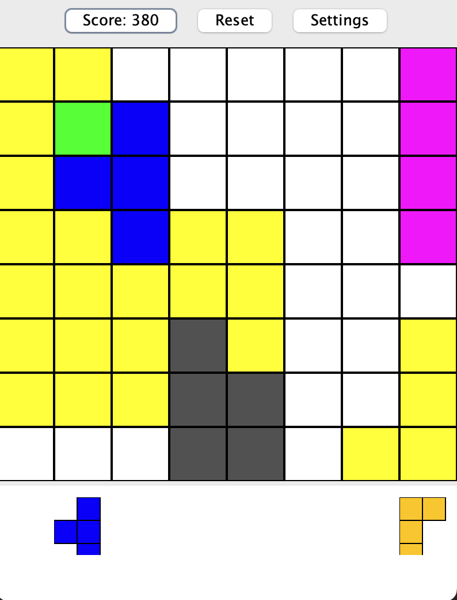
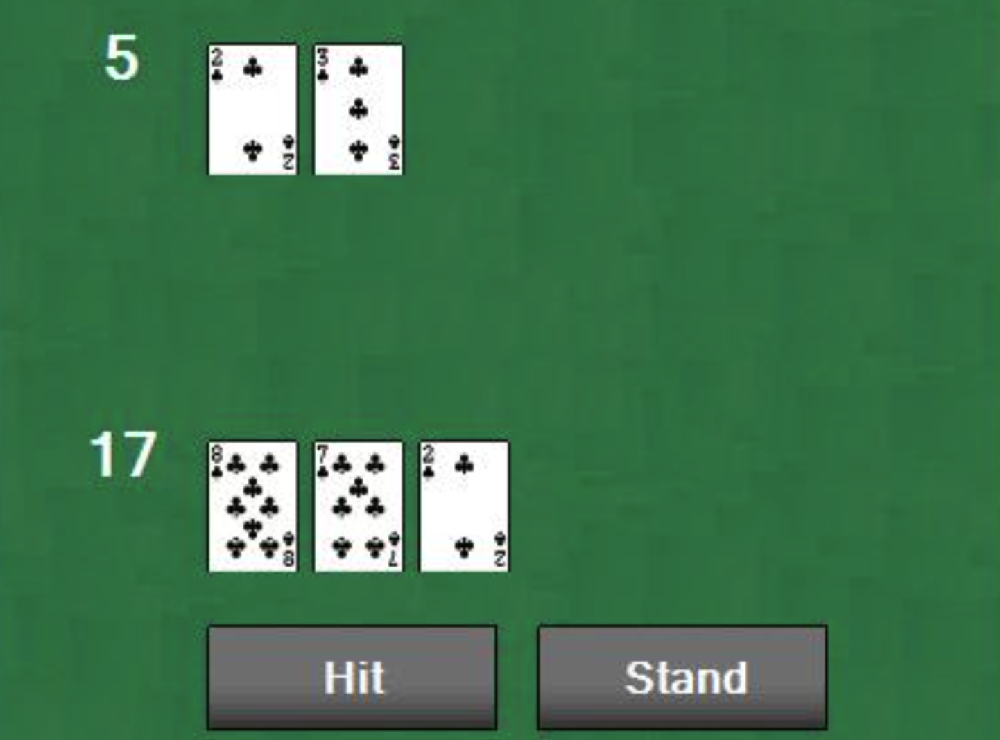

A small collection of personal and client work spanning game
development, full-stack web, and data analytics. Each project taught
me something I now use daily.
Robot Imitation Learning: ACT vs. SmolVLA
2026 · Research · Concordia College
PythonPyTorchHugging Face LeRobotCUDAW&BSO-101
A comparative study of two robot-learning approaches — the Action
Chunking Transformer (ACT) and SmolVLA, a vision-language-action
model — trained on identical demonstration data to benchmark a
lightweight specialist against a pretrained generalist on a
real-world manipulation task.
I built the full pipeline end-to-end on Hugging Face's LeRobot
framework: assembled and calibrated a dual-arm SO-101 robot with
leader–follower teleoperation, collected a 200-episode
demonstration dataset (~71k frames, dual-camera + joint-state) via
teleoperation, and published it to the Hugging Face Hub. I then
trained ACT from scratch (100k steps), fine-tuned the 450M-parameter
SmolVLA from its pretrained base, and deployed both policies for
autonomous task execution on the physical arm.
What I built
Dual-arm SO-101 assembly & calibration
Leader–follower teleoperation rig
200-episode dataset (~71k frames)
Published dataset on HF Hub
ACT trained from scratch (100k steps)
SmolVLA fine-tuned (450M params)
Autonomous policy deployment
Training profiling & DDP scaling analysis
What I learned
Diagnosed and resolved a deep stack of Windows GPU-training issues
to get LeRobot running on a dual-RTX-4000-Ada workstation —
PyTorch / torchcodec / FFmpeg version alignment, a native
pyarrow-vs-PyTorch DLL load-order segfault, Hugging Face cache
symlink-permission failures, and Windows multiprocessing
constraints. I then profiled training to identify compute vs. data
bottlenecks, which informed a single- vs. multi-GPU (DDP) scaling
decision.
Nixon Norman Media
2024 · Full-stack · Client work
HTML/CSSJavaScriptPHPSQL
A production website I built for a local videography company.
Designed and developed end-to-end with a portfolio gallery,
service pages, testimonials, a PHP-backed contact form, and a
small admin layer for managing content.
Features
Portfolio gallery
Services pages
Client testimonials
PHP-backed contact form
Responsive layout
MySQL persistence
What I learned
My first end-to-end client project: requirements gathering,
responsive layout discipline, server-side form handling, and what
it means to ship and support real software for someone else.
BlockBuster
2024 · Java · Personal
JavaSwingGUIGame dev

BlockBuster is a desktop arcade puzzle game built entirely in Java
with the Swing GUI library, inspired by the mobile game BlockBlast.
Players clear blocks by matching colors and chaining combos.
Features
Persistent high-score tracking
Dark mode toggle
Multiple color themes
Combo system for bonus points
Responsive Swing UI
Keyboard-driven controls
What I learned
Reinforced my Swing fundamentals and taught me how to architect
game state — separating model, view, and input handling so feature
work didn't snowball into tangled code.
Blackjack
2024 · Java · First Java project
JavaOOPConsole app

A console blackjack game written in Java where a single player
faces an AI dealer under standard casino rules. Built in my first
semester of college and improved across several iterations.
Features
Virtual money betting system
Split pairs functionality
Double-down option
Strategic AI dealer logic
Standard Blackjack rules
Hand evaluation engine
What I learned
My first real exposure to object-oriented design — modeling cards,
hands, decks, and players as distinct collaborators. The project
cemented how OOP keeps complex game state manageable.